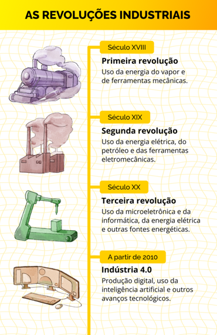
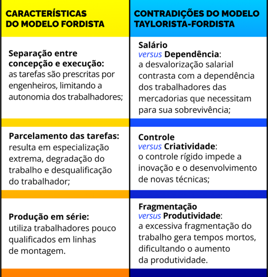

Reestruturação produtiva
As Revoluções Industriais são períodos históricos do capitalismo que foram marcados por grandes transformações tecnológicas, econômicas e sociais, as quais se alastram pelo mundo e impactam profundamente a sociedade desde então. A seguir, será apresentado, respectivamente, as revoluções que ocorreram até hoje.
- Segunda metade do século XVIII e primeira metade do século XIX: a primeira Revolução Industrial se caracterizou pela introdução do uso da energia do vapor e de ferramentas mecânicas, criando a produção industrial.
- Segunda metade do século XIX e início do século XX: a segunda Revolução Industrial é a da energia elétrica e do petróleo, com ferramentas eletromecânicas e com a produção em massa.
- Segunda metade do século XX: a terceira Revolução Industrial, baseada na microeletrônica e na informática, continua utilizando a energia elétrica, diversificando as fontes (nuclear, eólica, solar, de hidrogênio) com a produção flexível.
- A partir da década de 2010: na atualidade, vivencia-se uma nova fase com a introdução da Indústria 4.0, que envolve produção virtual, Inteligência Artificial (IA) e outros avanços tecnológicos recentes, fazendo com que alguns autores a denominem como quarta revolução industrial.

Título: As revoluções industriais
Fonte: Prosa (2025a).
Enquanto as Revoluções Industriais indicam o momento ou intervalo crucial de introdução de novas máquinas, materiais e fontes de energia, a reestruturação produtiva aponta para um processo complexo de longa duração. Assim, ele está relacionado à transformação das formas de produzir e organizar o trabalho, constituindo novas relações sociais e laborais, ou seja, um novo modelo de produção. Entretanto, como ocontinua sendo o capitalista, a análise da reestruturação produtiva envolve, além da produção, a circulação e o consumo.
Não é coincidência o fato de que a reestruturação produtiva se intensificou a partir da segunda metade do século XX, a partir da terceira Revolução Industrial. Esta, também conhecida como revolução tecnocientífica ou revolução informacional pela forte integração entre ciência, tecnologia e produção, trouxe, junto com os avanços tecnológicos, o aumento e a diversificação da produção, além de diversas consequências sociais. Entre elas, as mais imediatas são:
- A automação e a robotização, acarretando a diminuição da demanda por mão de obra em diversas áreas;
- As novas profissões relacionadas à tecnologia, enquanto outras desapareceram ;
- A necessidade imposta de requalificação e adaptação constante dos trabalhadores;
- A desigualdade digital acentuada, com boa parte da população excluída do acesso às novas tecnologias;
- A maior concentração de renda interna e entre os países.
A reestruturação produtiva é um conceito que se torna mais claro ao analisarmos as mudanças em relação ao modelo anterior de produção, o taylorismo-fordismo.
O fordismo é fundamentado na gerência científica do taylorismo e sua implementação enfrentou significativa resistência dos trabalhadores. Essa resistência foi manifestada de forma individual, por meio de absenteísmo - falta de assiduidade no cumprimento de um trabalho/obrigação -, o que gerou uma queda brusca na qualidade do trabalho, e, também, de forma coletiva, com as greves.
Abaixo, em um infográfico, listamos as principais características do taylorismo-fordismo e, ainda, as contradições internas desse modelo, que foram as grandes causadoras da resistência por parte dos trabalhadores a esse sistema de trabalho:

Título: Fordismo vs. Taylorismo-fordismo
Fonte: Prosa (2025b).
A partir da década de 1960, as contradições do taylorismo-fordismo se tornam insustentáveis, levando a uma estagnação da taxa de lucro, além disso fatores externos, como a crise do petróleo nos anos 1970, agravam essa situação. Em resposta, os países centrais adotam políticas monetaristas que visam reconstruir o intervalo entre planejamento e execução. Em vista disso, a chegada da microeletrônica traz flexibilidade à produção, permitindo a fabricação diversificada em pequenos lotes e adaptações contínuas. Esse processo resulta em ritmos de trabalho mais próximos aos das fábricas de produção contínua, onde o ritmo da máquina predomina sobre o trabalhador.
As transformações no chão de fábrica refletem uma alteração nas atitudes gerenciais e nas políticas econômicas. As mudanças no mercado e nas regras de negociação coletiva ocorrem rapidamente, acompanhando as inovações tecnológicas e organizacionais, como as novas formas de gestão a fim de otimizar os processos, sendo elas: .
Em suma, a reestruturação produtiva representa uma resposta às limitações do modelo taylorista-fordista, buscando maior flexibilidade e eficiência nas relações de trabalho e na produção, além de atenuar as reivindicações dos trabalhadores por maior participação nas decisões e no controle do trabalho.
Entretanto, a reestruturação produtiva implanta um novo modelo de produção, o toyotismo, que, na maioria dos setores, resulta em desemprego e precarização do trabalho, uma vez que a automação e a flexibilização podem levar à eliminação de postos de trabalho. Alguns poucos setores geram postos de trabalho com salários atrativos, mas nem de longe suprem a demanda de emprego criada pelas demissões em massa. Uma das consequências é a polarização entre os trabalhadores qualificados e os não qualificados, aumentando a desigualdade social.
Para aprofundarmos sobre os impactos comprovados pela reestruturação produtiva excludente, citamos alguns deles abaixo:
- Perda de direitos: a flexibilização do trabalho está associada à erosão de direitos trabalhistas e à desregulamentação das relações de trabalho, resultando em condições laborais mais precárias e na diminuição da capacidade de negociação dos trabalhadores;
- Impactos psicossociais: a insegurança no emprego e a pressão por produtividade podem levar a problemas de saúde mental entre os trabalhadores, como estresse e burnout, refletindo a tensão entre a necessidade de adaptação às novas exigências do mercado e a manutenção de um equilíbrio saudável entre a vida pessoal e a profissional;
- Prejuízos ao meio ambiente: a busca incessante por eficiência e lucro pode levar à exploração excessiva dos recursos naturais, levantando preocupações sobre a sustentabilidade ambiental e a responsabilidade social das empresas;
- Desigualdade do acesso à qualificação: a necessidade de requalificação constante dos trabalhadores para se adaptarem às novas tecnologias e processos gera um desafio adicional, especialmente para aqueles que não têm escolarização e acesso à formação adequada.
A adoção do novo modelo está longe de ser universal. Sobrevivem em alguns setores produtivos o taylorismo-fordismo, a manufatura e o artesanato, embora o modelo toyotista seja dominante nas grandes empresas e tenha exigido fortes investimentos para sua implantação.